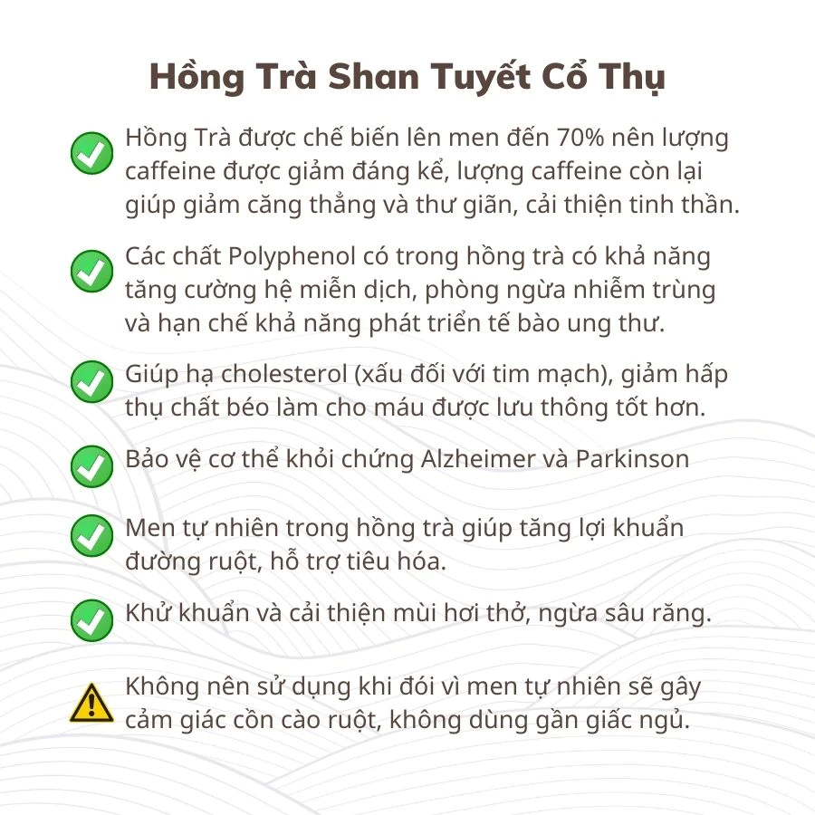
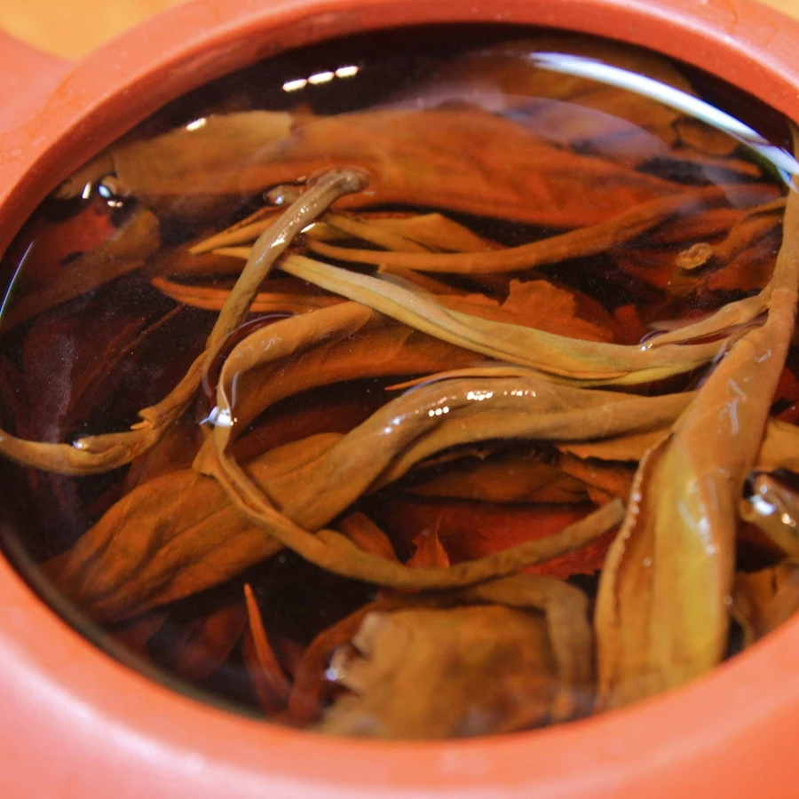
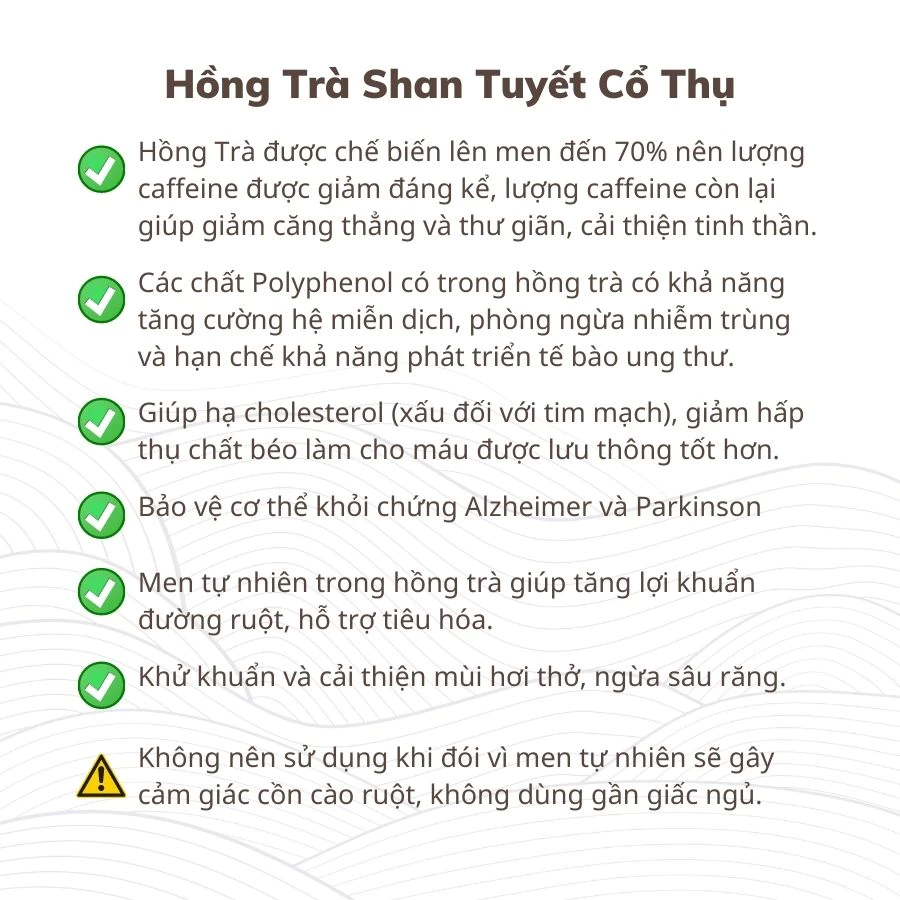
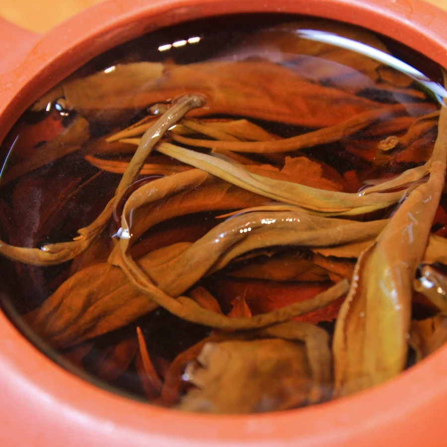

Hồng Trà Shan Tuyết
Hồng Trà Shan Tuyết Cổ Thụ- Trà rừng nguyên sinh. Thức uống tăng cường sự tỉnh táo, tập trung và sáng tạo không thể thiếu cho người thường xuyên hoạt động trí óc, văn phòng, ngồi máy tính. Một ấm trà vào mỗi buổi sáng đem lại cảm giác sảng khoái cho cả một ngày dài làm việc.
Mô Tả Sản Phẩm
Thành phần: Cùng được thu hoạch từ cây Trà Shan Tuyết và cùng cách chế biến, tuy nhiên với cách thu hoạch 1 tôm 3 lá đã đem lại năng suất thu hoạch cao hơn và giảm công thu hái nhiều hơn, đồng nghĩa với giá thành sản xuất giảm đáng kể. Ưu điểm: -Với cách thu hoạch nhiều lá hơn, khiến cho vị trà đậm đà hơn, phù hợp dùng trong pha chế để kết hợp các hương liệu khác mà không làm nhạt nhòa vị chuẩn của Trà Shan Tuyết. -Chuẩn Trà Shan Tuyết với chi phí tối ưu nhất, phù hợp cho kinh doanh quán trà sữa, đồ uống... Trà Shan Tuyết trong trà đạo thường thu hoạch 1 tôm 1 lá để có tỉ lệ búp trà cao, thưởng thức thanh tao trong trà. Nhưng cách thu hoạch này mất nhiều công sức hơn và giá trị sản xuất cao hơn nhiều. Trung bình cứ ~6kg lá trà tươi sẽ sản xuất được 1kg trà khô, vậy nên hái 6kg lá và búp sẽ nhanh hơn nhiều so với hái 6kg búp.
Hướng Dẫn Sử Dụng / Cách Pha Chế
...
Đánh Giá Của Khách Hàng
(Chưa có đánh giá nào cho sản phẩm này)